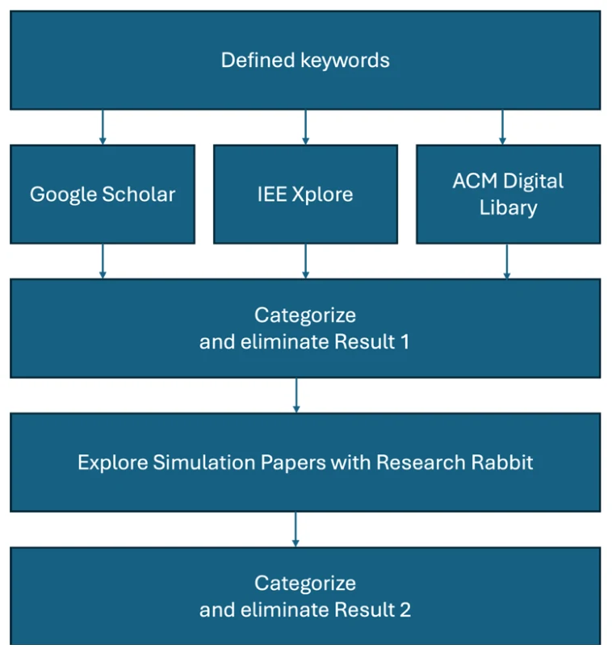
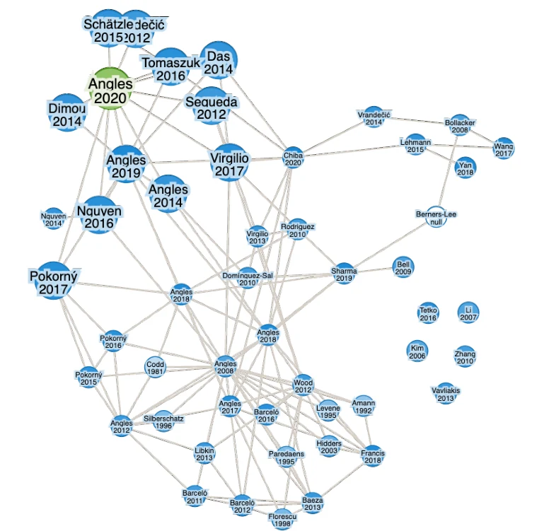
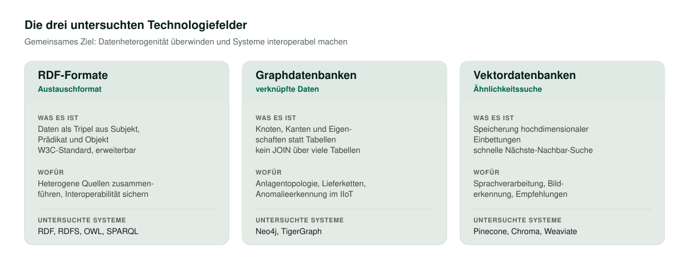
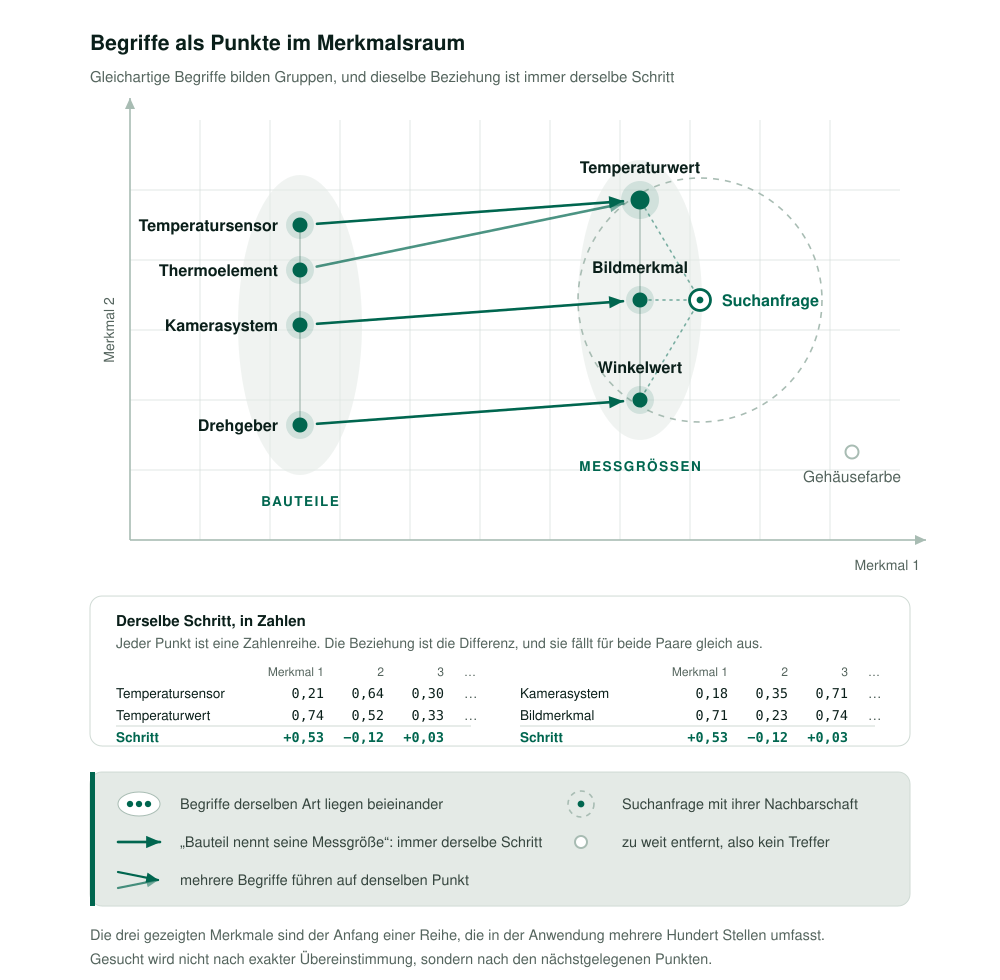

Herausforderung & Problemstellung
Industrie 4.0 lebt vom Zusammenspiel von cyber-physischen Systemen, dem Internet der Dinge und intelligenter Automatisierung. Damit dieses Zusammenspiel funktioniert, müssen Daten aus sehr unterschiedlichen Quellen zusammengeführt und in einer gemeinsamen Sicht verfügbar gemacht werden. Genau daran scheitern viele Vorhaben: Die Datenlandschaft ist heterogen, die Formate sind es ebenso, und Systeme verschiedener Hersteller sprechen nicht dieselbe Sprache.
Wissensmodellierung setzt an dieser Stelle an. Über Ontologien und semantische Netze lassen sich Bedeutung und Beziehungen der Daten explizit beschreiben, statt sie in der Anwendungslogik zu vergraben. Relationale Datenbanken stoßen dabei an ihre Grenzen, sobald die Verknüpfungen zwischen den Daten wichtiger werden als die Daten selbst. Hinzu kommt ein zweites Problem: Viele Verfahren des maschinellen Lernens arbeiten als Blackbox und machen Entscheidungswege undurchsichtig. Für industrielle Prozesse, in denen Entscheidungen nachvollziehbar sein müssen, ist das ein Ausschlusskriterium.
Der Bericht untersucht daher, welche Technologien diese Lücke schließen: RDF-Formate als standardisiertes Austauschformat, Graphdatenbanken für verknüpfte Daten und Vektordatenbanken für Ähnlichkeitssuche auf hochdimensionalen Daten. Die Leitfrage ist, welche davon sich für welchen industriellen Anwendungsfall eignen und woran sich diese Eignung messen lässt.
Quelle: Kyr (2024), Kapitel 1 und 3Methodik der Recherche
Die Recherche lief über drei wissenschaftliche Suchdienste: Google Scholar, IEEE Xplore und die ACM Digital Library. Der Suchzeitraum umfasste Mai und Juni 2024. Die gefundenen Arbeiten wurden von Beginn an in Kategorien einsortiert, um den abgedeckten Bereich im Blick zu behalten: Wissensmodellierung, RDF-Formate, Graphdatenbanken und Vektordatenbanken.
Der Prozess selbst verlief in sechs Schritten. Zuerst wurden die Suchbegriffe festgelegt und in einer eigenen Liste dokumentiert, damit die Auswahl nachvollziehbar und wiederholbar bleibt. Die Suche in den Diensten wurde über deren erweiterte Optionen nach Erscheinungsdatum, Relevanz und Fachgebiet eingegrenzt. In einer ersten Auswahl entschieden Abstract und Fazit über die Relevanz; Arbeiten ohne Bezug zu den Kernthemen fielen heraus. Die verbleibenden wurden vertieft auf Methodik, Ergebnisse und Aussagekraft geprüft.
Den Abschluss bildete eine Visualisierung der Zitationsbeziehungen zwischen den ausgewählten Arbeiten. Sie macht Verwandtschaften zwischen Veröffentlichungen sichtbar und gibt einen thematischen Überblick über den betrachteten Forschungszeitraum, was eine zweite Runde der Kategorisierung und Aussortierung ermöglichte.


Die drei Technologiefelder
Die untersuchten Technologien verfolgen dasselbe Ziel, greifen es aber von verschiedenen Seiten an. Sie schließen einander nicht aus, sondern ergänzen sich in einem gemeinsamen Stapel.

RDF-Formate
Das Resource Description Framework ist ein vom W3C standardisiertes Modell für den Datenaustausch im Web. Daten werden als Tripel aus Subjekt, Prädikat und Objekt abgelegt, was eine flexible und erweiterbare Struktur ergibt. Für Industrie 4.0 ist das aus drei Gründen interessant: Die Flexibilität erlaubt, bestehende Wissensgraphen zusammenzuführen, ohne ein gemeinsames Schema vorauszusetzen. Die Interoperabilität, verstanden als Fähigkeit zweier Systeme, Informationen auszutauschen und die ausgetauschte Information auch zu nutzen, ist die Grundbedingung dafür, dass Systeme zusammenarbeiten und sich weiterentwickeln können. Und die Skalierbarkeit entsteht dadurch, dass Schemageneratoren Änderungen an der Spezifikation automatisch in die abgeleiteten Schemata weitertragen. Das RDF Schema ergänzt dieses Modell um die Mittel, heterogene Wissensgraphen zu beschreiben und zusammenzuführen.
Graphdatenbanken
Eine Graphdatenbank speichert Daten als Knoten, Kanten und Eigenschaften. Knoten stehen für Entitäten, Kanten für deren Beziehungen, Eigenschaften für zusätzliche Angaben an beiden. Der entscheidende Unterschied zur relationalen Datenbank liegt im Abfrageweg: Wo dort mehrere Verbundoperationen über Tabellen nötig sind, folgt die Graphdatenbank unmittelbar den Verbindungen eines Knotens. Das macht sie überall dort schnell, wo die Verknüpfungen dicht sind, etwa bei Anlagentopologien, Lieferketten oder semantischen Beziehungen in Ontologien. Hinzu kommt, dass sich die Datenstruktur ändern lässt, ohne das Modell neu aufzusetzen. In der Produktion reicht das Anwendungsspektrum von der Überwachung und Optimierung bis zur Anomalieerkennung in IIoT-Umgebungen mittels graphbasierter neuronaler Netze.
Vektordatenbanken
Vektordatenbanken sind auf die Verwaltung hochdimensionaler Einbettungen ausgelegt. Sie beantworten nicht die Frage nach exakter Übereinstimmung, sondern die nach Ähnlichkeit, und liefern dafür schnelle Nächste-Nachbar-Suche, Clusterbildung und Ähnlichkeitsvergleiche. Ihr Einsatzgebiet liegt in Anwendungen künstlicher Intelligenz: In der Sprachverarbeitung werden semantische Ähnlichkeiten zwischen Texten gefunden, in der Bildverarbeitung vergleichbare Aufnahmen identifiziert, in Empfehlungssystemen passende Inhalte vorgeschlagen.

Benchmarking von Knowledge Graphs
Eine Technologieempfehlung ist nur so belastbar wie das Verfahren, mit dem sie gemessen wurde. Der Bericht stellt deshalb die etablierten Benchmarks gegenüber, die Leistung, Skalierbarkeit und Effizienz solcher Systeme anhand definierter Datensätze vergleichbar machen.
| Benchmark | Schwerpunkt | Metriken | Datentypen |
|---|---|---|---|
| LDBC Social Network Benchmark | Graphdatenbanken | Antwortzeit, Durchsatz, Effizienz von Graphoperationen | RDF, Graphen |
| Berlin SPARQL Benchmark | SPARQL auf RDF-Daten | Ausführungszeit, Ladezeiten, gemischte Abfragelasten | RDF |
| WatDiv | SPARQL-Endpunkte | Leistung und Skalierbarkeit, Erkennen von Engpässen | RDF |
| LDBC Graphalytics | Graph-Analyseplattformen | Skalierbarkeit, Robustheit, Abfrageeffizienz | synthetische und reale Graphdaten |
| SPARQL Query Performance Benchmark | Datenhaltungssysteme für Graphabfragen | Abfragegeschwindigkeit über verschiedene Abfragetypen | Row-, Column-, Graph- und Document-Store |
Gemessen wird dabei nicht an konstruierten Kleinstbeispielen. Die verwendeten realen Datensätze reichen von einem Zitationsnetzwerk mit 3,77 Millionen Knoten und 16,5 Millionen Kanten bis zu sozialen Netzwerken mit 65,6 Millionen Knoten und 1,81 Milliarden Kanten. Erst in dieser Größenordnung zeigt sich, ob eine Technologie trägt.
Quelle: Kyr (2024), Kapitel 6.5 und Tabelle 1Bewertungskriterien des Tech-Stacks
Für den abschließenden Technologievergleich wurde ein eigener Kriterienkatalog entwickelt, abgeleitet aus den ausgewerteten Arbeiten und der technischen Dokumentation der Systeme. Jedes Kriterium trägt eine Begründung, warum es für den industriellen Einsatz zählt, und eine Angabe, woraus sich die Bewertung speist:
- Standards und Formate: Unterstützung von W3C-Standards sowie den Formaten RDF, OBO, OWL und XML. Ohne gemeinsame Formate bleibt der Datenaustausch zwischen Systemen eine Einzelfalllösung.
- Abfragesprachen: Unterstützung von SPARQL, SQL und Cypher. Die Fähigkeit, Daten gezielt abzufragen, entscheidet darüber, ob sie sich überhaupt nutzen lassen.
- Benutzeroberfläche: Anpassbarkeit und Ontologieunterstützung, weil eine zugängliche Oberfläche über die tatsächliche Verwendung im Betrieb mitentscheidet.
- Skalierbarkeit: die Fähigkeit, wachsende Datenmengen und Nutzerzahlen ohne Leistungseinbruch zu tragen, bewertet anhand von Benchmarkstudien.
- Navigation und Zusammenarbeit: interaktive Navigation in komplexen Datenstrukturen und Unterstützung gemeinsamer Arbeit daran.
- Quelloffenheit und Echtzeitfähigkeit: Offenheit schafft Transparenz und Anpassbarkeit, Echtzeitfähigkeit ist für zeitkritische Anwendungen unverzichtbar.
- Datenbanktyp: die Einordnung als Graph- oder Vektordatenbank, weil daraus die Eignung für den jeweiligen Anwendungsfall folgt.
Der Katalog deckt neben den Datenbanken auch die Werkzeuge zur Ontologiemodellierung ab, darunter Protégé, TopBraid Composer und WebProtégé.
Quelle: Kyr (2024), Kapitel 6.4 und 9Ergebnis & Mehrwert
Der Bericht kommt zu dem Schluss, dass sich die drei Technologiefelder nicht gegenseitig ersetzen, sondern gemeinsam eine tragfähige Grundlage bilden. Ontologien und semantische Netze harmonisieren die Daten und sichern die Interoperabilität industrieller Systeme. Graphdatenbanken verarbeiten verknüpfte Daten spürbar schneller und skalierbarer als relationale Systeme und eignen sich sowohl für Echtzeitauswertungen als auch für die Analyse großer Ereignismengen. Vektordatenbanken ergänzen diesen Stapel um die Ähnlichkeitssuche, die Verfahren des maschinellen Lernens in Sprach- und Bildverarbeitung überhaupt erst praktikabel macht.
Offen bleiben Komplexität und Skalierbarkeit: Die Systeme sind anspruchsvoll in Entwicklung und Betrieb, und es fehlt an standardisierten Integrationsrahmen, an schnelleren Abfragen und an Werkzeugen, die für den industriellen Alltag zugänglich genug sind. Zugleich unterstreicht der Bericht die Bedeutung erklärbarer Schlussfolgerungen über semantische Technologien, damit Entscheidungen in der Produktion nachvollziehbar bleiben, sowie die Rolle menschlicher Aufsicht als Korrektiv.
Für die eigene Arbeit war der Bericht die Vorarbeit: Die hier getroffene Einordnung von Graph- und Zeitreihendatenhaltung führte unmittelbar zur polyglotten Persistenz der Masterarbeit, in der eine Graphdatenbank die Anlagentopologie modelliert und eine Zeitreihendatenbank die Messwerte trägt.
Quelle: Kyr (2024), Kapitel 6.6, 7 und 8Quellen
Kyr, P. (2024). Comprehensive Knowledge Modeling in Industry 4.0: Tools and Technologies [State-of-the-Art Report]. Fachhochschule St. Pölten, Masterstudiengang Interactive Technologies.
Die Abbildungen 1 und 2 stammen aus dem genannten Bericht und tragen dessen Nummerierung; sie sind eigene Darstellung beziehungsweise eigenes Rechercheergebnis. Die Übersicht der Technologiefelder und die Darstellung des Merkmalsraums sind eigene Darstellungen auf Basis von Kapitel 6.
Zurück zu den Projekten